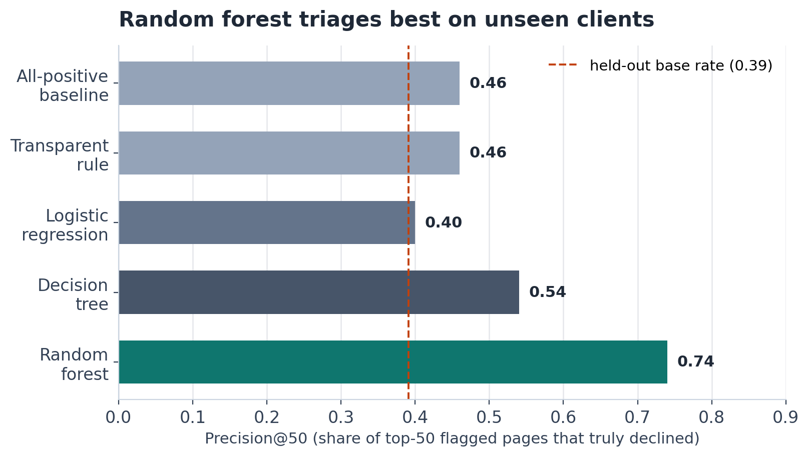
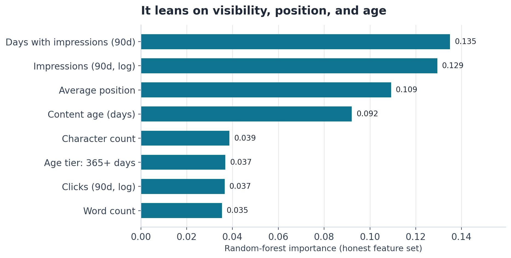
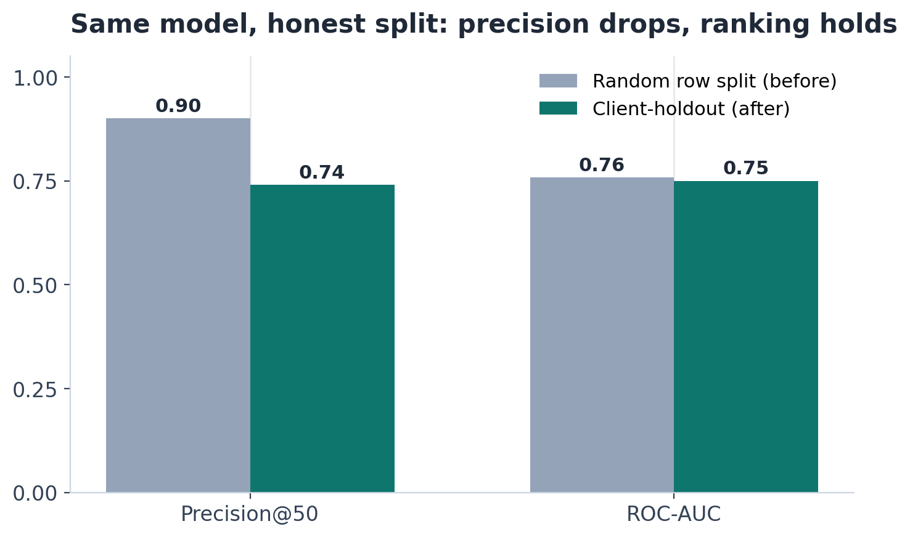
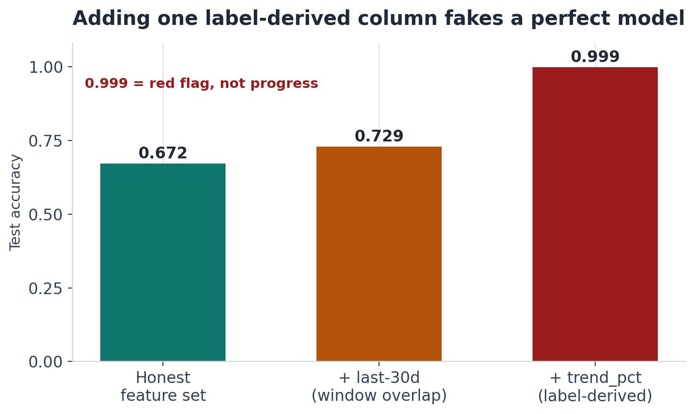

01 Main Observations
The decision is not “is this page declining?” but “which pages should a reviewer open first?” We measured how well a ranker answers the second question for clients it has never seen.
Everything below is a single-snapshot, client-holdout result. The target is rule-derived, the test set is six unseen clients, and the headline metric is precision@50: of the 50 pages ranked highest, what share truly decline? The language is deliberately narrow — observed, directional, decision support. Nothing here is causal.
What we observed
- Random forest: precision@50 0.74, ROC-AUC 0.750, average precision 0.618. Against the 0.391 holdout base rate, that is +0.349 absolute — about 1.9× the base rate.
- Transparent rule: precision@50 0.46, ROC-AUC 0.501. The rule does not rank; its AUC is chance.
- Logistic regression: ROC-AUC 0.700 but precision@50 0.40. It has ranking signal; its balanced-weight threshold is a poor fit for a top-50 cut.
- Decision tree: precision@50 0.54, ROC-AUC 0.742.
- Random row split, same model: precision@50 0.90. This is not the headline. Section 4 shows it is client memorization.
The forest is not meaningfully more accurate than the decision tree (0.672 vs 0.677). It is better at the part that matters: it concentrates true decliners at the very top. That is a ranking gain, not a classification gain, and it is why precision@50 is the decision metric.
| Model | Accuracy | Precision@50 | ROC-AUC | Avg. precision |
|---|---|---|---|---|
| All-positive baseline | 0.391 | 0.46 | 0.500 | 0.391 |
| Transparent rule | 0.610 | 0.46 | 0.501 | 0.392 |
| Logistic regression | 0.661 | 0.40 | 0.700 | 0.522 |
| Decision tree | 0.677 | 0.54 | 0.742 | 0.575 |
| Random forest | 0.672 | 0.74 | 0.750 | 0.618 |

The signal is consistency, position, and age
The forest does not lean on writing style. Its top inputs are days with impressions (0.135), 90-day impressions (0.129), average position (0.109), and content age (0.092). Character count contributes 0.039 and word count 0.035. The pattern is “consistently seen, aging, mid-ranked,” which is also what a human reviewer would look for. The model's edge is combining those signals at scale, not discovering an exotic cue.

Where the ranker is weak
On the fixed holdout, accuracy is 0.596 for keyword articles (n = 1,367) versus 0.782 for feedly articles (n = 958). By position, top-3 pages are 0.911 accurate (n = 518); page 1 is 0.618 (n = 1,061), striking distance 0.580 (n = 405), and page 3–5 0.573 (n = 281). The model is most reliable where visibility is dense and least reliable in the ambiguous middle — exactly where a refresh decision is most tempting. That is an operating constraint, not a footnote.
Operating rule
Use the score to order reviews; send keyword and striking-distance pages to a human; do not auto-refresh. The model ranks, a reviewer decides.
What the evidence supports
- On unseen clients, the forest ranks decline risk better than a base-rate queue.
- The ranking signal is real: AUC 0.750 versus 0.501 for the rule.
- Reviewing the top of the queue first is a reasonable use of a fixed budget.
What it does not support
- That refreshing a page causes recovery.
- That a score is a calibrated probability of future decline.
- That one snapshot generalizes to every client or season.
02 The Label Definition
The model predicts one binary target. It is built from the dataset's trend bucket, not from an observed future outcome.
is_declining_label = 1 if trend_direction == "down" else 0
A row is one content page at one snapshot. trend_direction compares impressions in
the last 30 days with the previous 30 days and buckets the page as up, down, or flat. The
positive class is the down bucket. The dataset does not ship this target as a column; we derive
it before modeling.
| Quantity | Value | Meaning |
|---|---|---|
| Positive definition | — | trend_direction == "down" |
| Positive rows | 16,262 | 54.2% of 30,000 |
| Negative rows | 13,738 | 45.8% of 30,000 |
| Client-holdout positive rate | 0.391 | 2,325 test rows |
| Window compared | 30d vs prev 30d | Impressions |
What the label does — and does not — mean
- It is rule-derived. A page is “declining” because the trend bucket says so, not because we watched it decline after a refresh.
- It is snapshot-local. It describes the last 30 days relative to the prior 30 days at export time. It does not answer “will this page decline next month?”
- It is not a probability. A score of 0.8 means “high in the queue,” not “80% chance of decline.”
- It is class-imbalanced across splits. The overall positive rate is 54.2%, but the held-out clients are 39.1% positive. We use class weights so the model does not ignore the minority class on the harder split.
03 How We Did It (Test Design)
One snapshot, one honest split, one operational metric. The test is deliberately harder than a random row split: six clients are removed entirely.
Data and timeline
We use the anonymized starter slice committed to the repository
(data/raw/content_refresh_anonymized.csv): 30,000 rows × 44 columns, 32
pseudonymized clients, one snapshot whose traffic metrics cover a trailing 90-day window. We
did not use the gated warehouse release. The slice is public-safe and reproducible from a clone.
The design is a cross-section, not a time series. The 90-day totals, 30-day totals, and previous-30-day totals come from the same export. There is no train-on-past / test-on-future split. That is a design limit, not an oversight; it is the first thing Section 5 says to fix.
| Quantity | Value | Note |
|---|---|---|
| Rows | 30,000 | One page per row |
| Raw columns | 44 | Traffic, metadata, tiers, trend flags |
| Pseudonymized clients | 32 | Grouping key only; never a feature |
| Model features | 52 | 18 numeric + 8 categorical, one-hot |
| Training rows | 27,675 | Clients not in the holdout |
| Test rows | 2,325 | Six clients held out entirely |
| Client overlap | 0 | Checked in code |
Features and exclusions
The honest feature set has 18 numeric columns and 8 categorical columns, giving 52 columns after
one-hot encoding. Heavy-tailed traffic counts are transformed with log1p. Numeric
gaps become zero; categorical gaps become unknown. The following never enter the
matrix:
trend_directionandtrend_pct— both derived from the label.is_declining_label— the target itself.content_idandclient_id— identifiers, grouping only.- All
*_last_30dcolumns — they overlap the label window.
Models
- All-positive baseline — predicts the positive class for everyone; a floor.
- Transparent rule — stale (≥90 days since update) × visible (previous-30-day impressions above the median) × previous-30-day impressions. No learning.
- Logistic regression — standardized inputs, balanced class weights.
- Decision tree — depth 5, minimum 50 rows per leaf, balanced weights.
- Random forest — 200 trees, depth 10, minimum 25 rows per leaf,
balanced_subsampleweights.
Holdout strategy and base rate
A seeded 20% sample of clients — six of 32 — is removed entirely. That leaves 27,675 training rows and 2,325 test rows with zero client overlap. The test base rate is 0.391; the overall base rate is 0.542. A stratified random row split is run only as a contrast, because it lets the same client appear on both sides.
Metrics and stability
Precision@50 is the operational metric: it matches a reviewer budget of 50 pages. ROC-AUC and average precision measure ordering quality and are more stable than a single top-50 cut. Accuracy is reported for comparability but is not the decision metric. To quantify split sensitivity, the client holdout is repeated across five seeds (42, 7, 13, 2024, 99) with a fresh model each time. The result is 0.83 ± 0.09 precision@50 and 0.73 ± 0.06 ROC-AUC. The seed-42 split (0.74) is a conservative draw; the spread is the real uncertainty.
Reproduce
# from the repository root
pip install -r requirements.txt
python scripts/build_paper_assets.py # rewrites docs/assets/*.png + metrics.json
Environment: Python 3.11.6, pandas 3.0.0, NumPy 1.26.4, scikit-learn 1.8.0, Matplotlib 3.10.8.
The forest uses a fixed random_state and is deterministic. Every reported number is
in docs/assets/metrics.json; the notebooks in work/notebooks/ (w03–w06)
are the audit trail. The starter CSV ships with the repo.
04 Leakage & Validation Checks
The validation question is not “did the score go up?” but “did it go up for a reason that survives on new clients?” We ran three checks, and one of them produces a deliberately absurd number.
Check 1 — Client leakage: random split vs client holdout
A random row split shares clients between train and test. The same model then scores 0.90 precision@50; on the client holdout it scores 0.74. ROC-AUC barely moves (0.758 → 0.750). The precision drop is client-context memorization, not a loss of ranking signal. The random-split number is therefore not evidence of quality.
| Split | Test base rate | Precision@50 | ROC-AUC |
|---|---|---|---|
| Random row split clients leak across the split | 0.542 | 0.90 | 0.758 |
| Client holdout zero client overlap | 0.391 | 0.74 | 0.750 |

Check 2 — Label leakage: add one column at a time
Starting from the honest features, we add two tempting columns separately and re-score on the
same holdout. impressions_last_30d overlaps the label window; trend_pct
is the continuous variable the label bucket is built from. The second addition is the answer
itself.
| Feature set | Accuracy | Precision@50 | ROC-AUC |
|---|---|---|---|
| Honest (used) | 0.672 | 0.74 | 0.750 |
+ impressions_last_30d (window overlap) | 0.729 | 0.94 | 0.843 |
+ trend_pct (label-derived) | 0.999 | 1.00 | 1.000 |

A model that sees trend_pct can reconstruct the label. Perfect accuracy is the
signature of a broken experiment, so we keep the test in the report. The honest number remains
0.74 precision@50.
Check 3 — Feature contract and window overlap
- The training pipeline asserts that
trend_direction,trend_pct,is_declining_label,content_id, andclient_idare absent from the matrix. - No
*_last_30dcolumn is in the honest feature set. - Client overlap between train and test is zero, verified on the split indices.
- The label is derived after the feature matrix is built, so the target cannot enter by construction.
Residual risk (what these checks do not remove)
- Window overlap in the inputs. The 90-day totals include the 30-day label window. This likely makes the honest scores optimistic in degree, though not in direction. We do not claim an unbiased estimate.
- Crude missing-value handling. Numeric gaps become zero, so missing
avg_positionis read as position zero. Structured missingness — for example,search_volumefor one article type — can carry content-type information. - No time-aware test. A cross-section cannot detect drift between the snapshot and deployment.
- No calibration. The 0.5 cut is arbitrary; scores are ranks, not probabilities.
- Small, uneven client set. Six held-out clients and a 0.391 holdout base rate versus 0.542 overall mean client uncertainty is wide; precision@50 varies by ±0.09 across seeds.
05 What We Still Need To Learn
What we have is a directional ranking result. What we do not have is a causal or forward-looking claim. These are the tests that would change the claim.
-
Run a post-refresh causal test
Randomize refreshes (or build a matched cohort) and measure recovery against a no-refresh control. This is the missing test: the current label never observes what happens after an edit.
Why it matters: without it, “this page is declining” cannot become “refreshing this page helps.”
-
Move to time-aware validation
Train on an earlier snapshot and test on a later one. Report the drop. If the AUC falls toward 0.5, the queue is not stable enough to deploy.
Why it matters: a random or client split still cannot detect seasonality, algorithm updates, or concept drift.
-
Replace the rule-derived label with an observed outcome
Define the target as measured decline over a future window, not a bucket computed from the same snapshot. Re-run the same validation ladder.
Why it matters: the current target is a definition, not a measurement.
-
Expand clients and report confidence intervals
Add clients, use nested cross-validation, and report intervals around precision@50 and AUC. Six held-out clients is enough to show a direction, not enough to certify a product.
Why it matters: the five-seed spread is ±0.09 precision@50; a point estimate hides that.
-
Calibrate the scores
If anyone will read a score as a probability, fit calibration and report Brier score and a reliability curve. Otherwise keep the language explicitly rank-based.
Why it matters: 0.8 currently means “high in the queue,” not “80% chance of decline.”
-
Fix missing-data handling and test its sensitivity
Stop treating
avg_position = 0as rank zero. Add explicit missing indicators and compare against the current fill. Check whethersearch_volumemissingness is acting as a content-type shortcut.Why it matters: zero-filling can encode the answer through side channels.
-
Tune the threshold to the review budget
Plot precision@k and recall@k across k, then choose the cut from the team's actual capacity. The 0.5 probability threshold is not a business decision.
Why it matters: the queue metric should match how many pages a reviewer can open, not a default classifier setting.
-
Build segment-specific handling
Keyword articles (0.596 accuracy), striking-distance pages (0.580), and page 3–5 (0.573) are the weak slices. Try segment models or segment-specific thresholds before trusting a single global cut.
Why it matters: the global 0.74 hides a much weaker middle of the results page.
-
Add demand, competitor, and SERP context
Search volume, competition, backlinks, and SERP features are missing from this snapshot. Add them where privacy allows, then re-test whether the ranking gain survives.
Why it matters: the model currently sees supply-side signals (visibility, position, age) but little demand-side context.
-
Replicate on the full warehouse release
Repeat the client-holdout and leakage ladder on the gated release before generalizing beyond the 30,000-row teaching slice.
Why it matters: 32 clients and one snapshot are a starting point, not a population.
Observed and directional: a random forest ranks decline risk for unseen clients at 0.74 precision@50 against a 0.39 base rate. It is not causal, not calibrated, not time-aware, and not perfect. It is a decision-support queue, not a refresh oracle. If a time-aware test drops AUC toward 0.5, or a causal test shows no recovery lift, the operating rule should change.